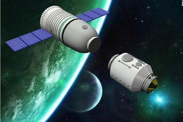
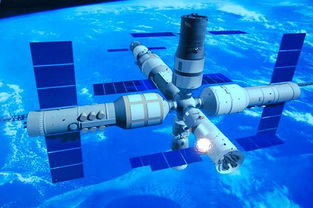
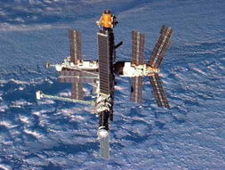

Related pictures
- 
- 
- 
As we all know, the development of space technology has brought many benefits to mankind. If there are people in space activities, it can make space technology more powerful, give full play to people's wisdom and skills, and solve some difficult problems in space technology where no one is in space activities. People have unique abilities, such as emergency judgment, creativity and active maintenance and control functions. People have senses and feelings, such as vision, hearing, touch and motion, cold, heat, smell and balance. People are very active in information processing and observing changes in the outside world. They also have the ability to recognize, associate, summarize, analyze and synthesize memories. Some of them cannot be replaced by "computers". Human's control and movement ability is one of the main activities in manned space flight, including the generation and application of force, the control of movement speed, self-power control and continuous adjustment control, etc., all of which are of decisive significance to the operation of space. Even if everything is automatic and intelligent, it cannot be separated from human intervention, and that is the reason why it is even better!
Manned spaceflight has greatly expanded the scope of human activities, is an important means to further large-scale development and utilization of space resources, and has important strategic significance to the country's political, economic, scientific and technological development. Former Soviet cosmonaut Gagarin entered space for the first time in 1961 and the U.S. Apollo spacecraft landed on the moon in 1969. These two world-beating feats excavated and attracted hundreds of thousands of elite talents. NASA experts have calculated that the United States can receive 9 US dollars for every US dollar invested in manned space flight. More than 30,000 civilian products benefit from the technology developed by the development of the space shuttle, not to mention the scientific achievements brought about by more than 100 flights of the space shuttle. The improvement of manned space technology has also contributed to "space tourism". In 2001 and 2002, American Tito and South African shuttleworth paid 20 million US dollars respectively to travel to the International Space Station for about a week. The third group of two tourists returned to the International Space Station in early 2005, with about 10 people behind them. Experts predict that in the future space may become a tourist hotspot for ordinary people.
(1) in terms of science and technology, because manned space technology is a comprehensive and advanced technology with intensive science and technology, it reflects the achievements in many fields of modern science and technology, and at the same time puts forward new development requirements for various fields of modern science and technology, thus promoting and promoting the development of the whole science and technology. in other words, the development of a country's manned space technology can reflect the overall science and technology and high-tech industry level of the country, such as system engineering, automatic control technology, computer system, propulsion capability, environmental control, health and protection technology, communication, remote sensing, testing technology, etc. It also reflects the development level of modern mechanics, astronomy, earth science and space science in this country, especially the development level of space medical engineering in this country. Without the research and development of space medical engineering, it is impossible to send people into space and live and work safely, healthily and efficiently.。
(2) The development of manned space flight can reflect a country's comprehensive national strength; Nowadays, all developed countries in the world take the enhancement of their comprehensive national strength as their primary goal in their development strategies, the core of which is the development of high technology, and one of the main contents of which is manned space flight. When a country sends its astronauts into space, it can fully reflect the strength of its comprehensive national strength, and will also enhance the national pride of the people of the country, inspire the national spirit and enhance the cohesion of the whole people. In particular, once our astronauts enter space, they can attract the attention of people all over the world and raise our international status, just as our country possessed nuclear weapons and artificial earth satellites in the 1960s and 1970s.
(3) the development of manned space flight can better exploit space resources for the benefit of mankind on earth. It is now known that the vast space is a huge treasure house of human beings, which contains rich resources. The manned space program is a bridge to this treasure house. Imagine astronauts commanding the earth in space can observe the earth by various means. It can obtain more information and data than unmanned detection and remote sensing. However, the technological process of the space factory has almost become "magic". under microgravity, vacuum and no convection, it can produce alloy materials and "magic drugs" and related, which are difficult to complete on earth.Products. After the products or semi-finished products of the space factory are returned to the ground, they may also bring about a "new industrial revolution". It can be expected that articles printed with the words "made in space" will continue to be put on the market.
(4) manned space flight is the beginning of a new stage of human development, because human beings can transfer to other stars to live and develop better living space through the bridge of manned space flight. This is not something to be expected. At present, the first thing to do is for people to travel to space and see the mysterious space and wonderful wonderland first. Soon, mankind will dominate space and realize the revolution of human development.